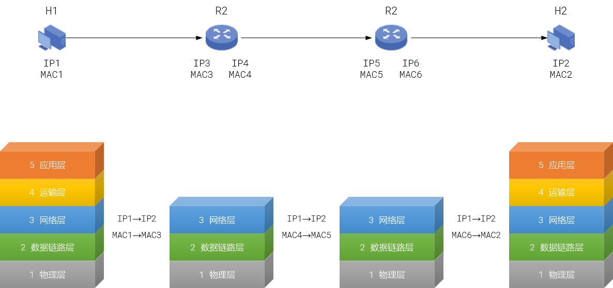
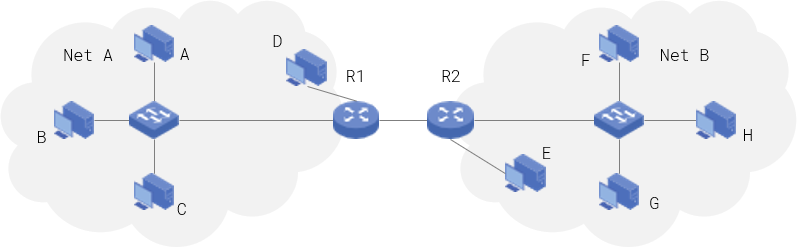
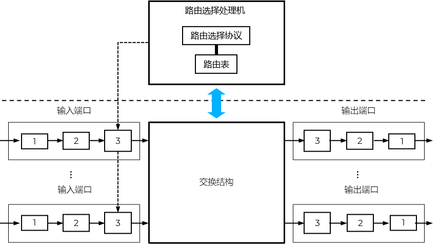
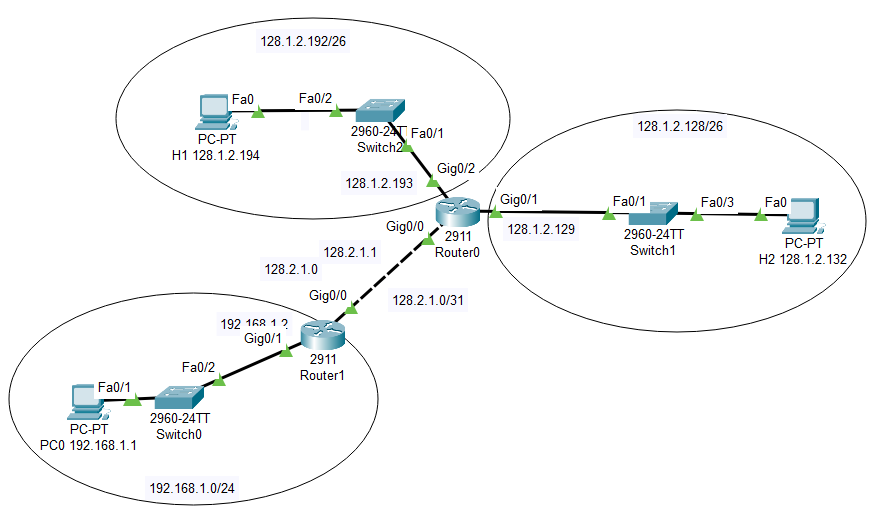
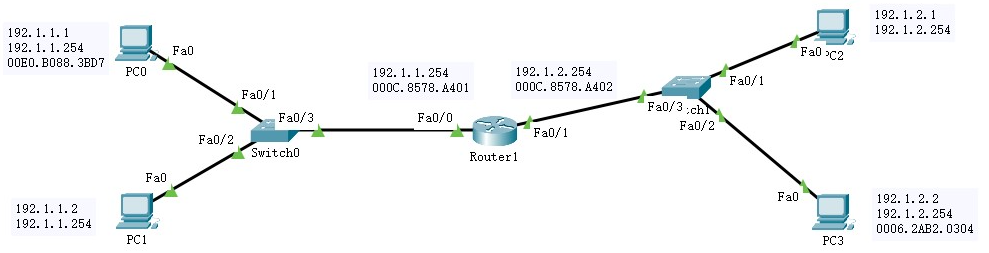
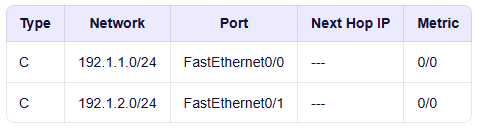
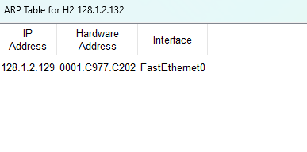
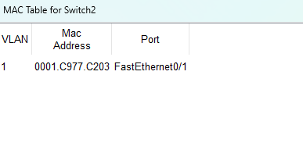
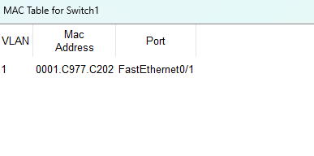
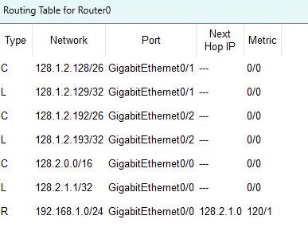

分组转发
@Forwarding- 分组的转发是基于分组首部中的目的地址 - 基于终点 的转发
- IP数据报的转发需要借助网络层设备路由器 Router 实现
- 重点关注3张表
ARP表
MAC表
Router表

路由器 Router
- 三层设备；实现不同类型网络之间的互联；对应的PDU是IP数据报/分组IP packet
- 转发的依据是路由表（直连路由、静态路由和动态路由）
- 多输入/多输出端口：从某个输入端口收到分组后，根据路由协议，按照分组目标IP，从某个输出端口转发给下一个路由器；重复直至分组到达目的网络
- 使用路由器，真正实现了网际互连
- 逻辑结构 Logical
- 路由选择部分
根据路由协议，通过定期和相邻路由器交换路由信息来维护路由表
由软件实现
侧重点：如何设计最优？
- 分组转发部分
根据路由表进行转发
通常使用硬件实现
由于线速 line speed 和处理速率的不匹配，导致的数据溢出、分组丢失、通信时延
侧重点：如何搜索最优？
- 路由表 Router Table
- 路由表中的每一个条目 Entry 代表一条路由信息，指导路由器如何转发数据包。其包含三个主要部分：
- 网络地址 Network：
IP地址和子网掩码，采用CIDR记法；如 128.1.2.192/26
- 转发端口 Port：
指明数据包应该从路由器的哪个物理或逻辑接口发送出去；如0、1、3
- 下一跳IP地址 Next Hop IP：
如果目标网络不是直接连接在本路由器的端口上，那么数据包需要先发送到另一个路由器（即“下一跳”）
这个字段就是那个“下一跳”路由器的IP地址
如果目标网络是直连的（如前两行所示），则此字段为“–”，表示数据包可以直接交付，无需经过其他路由器
- 128.1.2.192/26 通过端口1直接连接，可以直接交付
- 128.1.2.128/26 通过端口2直接连接，可以直接交付
- 128.1.3.64/26 需要通过端口3转发，并且必须发送到IP地址为 192.168.3.2 的下一个路由器
- 转发过程 Procedure
- 当路由器收到一个 待转发 的数据包时，会按照以下步骤进行处理：
- 判断是否为本地交付：
路由器首先将数据包的目的IP地址与自己所连接网络的地址掩码进行“与”（AND）运算
如果计算出的网络地址与自己的某个直连网络地址相同，说明目标主机就在同一个网络内，路由器可以直接将数据包交付给目标主机（直接交付）
如果不同，则说明目标主机在远程网络，需要将数据包转发给网关路由器
- 查找路由表（最长前缀匹配）：
网关路由器会 逐行遍历 检查路由表中的每一条记录
对于每一条记录，它会将数据包的目的IP地址与该记录中“网络地址”所对应的子网掩码进行“与”（AND）运算
如果运算结果与该记录的“网络地址”相同，则认为该记录是匹配的
- 选择最佳匹配并转发：
路由器会选择 所有匹配 记录中 最长前缀（即子网掩码位数最多，如/26比/24更长）的那一条作为最佳匹配 - 路由聚合
根据这条最佳匹配记录中的“转发端口”和“下一跳IP地址”信息，将数据包转发出去
如果“下一跳IP地址”为空（“–”），则从指定端口直接发送
如果“下一跳IP地址”有值，则通过指定端口将数据包发送给该IP地址的路由器
- 处理无匹配情况：
如果逐行遍历完整个路由表都没有找到任何匹配的记录，又可以分为2种情况：
设置了默认路由 0.0.0.0/0，则选择默认路由转发
没有设置默认路由：丢弃该数据包，并通常会向源主机发送一个“目的网络不可达”的ICMP错误报告
- 主机发送（通信发起方主机）
- 将目的IP地址和当前网络的地址掩码相与
如果相等，在同一个网，直接交付给主机
否则，应间接交付给默认网关路由器
- 直接交付：主机在ARP高速缓存表中查找目的IP地址对应的MAC地址
如果有，封装IP数据报成帧，并发送给目的主机
否则，发起对目的IP地址的ARP请求，然后再封帧、转发
- 间接交付：主机在ARP高速缓存表中查找默认网关对应的MAC地址
如果有，则封帧交付给默认网关路由器
如果没有，则发起对默认网关路由器的ARP请求
- 路由器转发
- 收到分组
- 判断目的IP地址是否在本网：当前网络的地址掩码 & 目的IP地址
如果和本网的网络地址/网络前缀相等，则直接交付
如果不等，则交付给本网默认网关路由器，由其完成后续任务
- 直接交付：主机在ARP高速缓存表中查找目的IP地址对应的MAC地址
如果有，封装IP数据报成帧，并发送给目的主机
否则，发起对目的IP地址的ARP请求
- 间接交付：主机在ARP高速缓存表中查找默认网关路由器对应的MAC地址
如果有，则封帧交付给默认网关路由器
如果没有，则发起对默认网关路由器的ARP请求
- 网关路由器逐行检索路由表的记录，使用目的IP地址和路由表项的网络地址对应的地址掩码AND：
如果网络地址相同，则根据指定的端口，转发给下一跳
如果不同，继续检索下一跳记录
如果都没有匹配的记录，则丢弃该分组，并报告分组出错


物理层：Repeater / Hub
链路层：Switch / Bridge
运输层+：Gateway

| network | port | next hop ip |
|---|---|---|
| 128.1.2.192/26 | 1 | - |
| 128.1.2.128/26 | 2 | - |
| 128.1.3.64/26 | 3 | 192.168.3.2 |
数据链路层的范畴
都是基于IP；所以设备要提前配置好IP地址
- H1向目的主机H2 128.1.2.132发送分组。Router0的路由表如下。
- H1所在网络：128.1.2.192/26
- 网络前缀：FF.FF.FF.1100 0000
- 目标主机：128.1.2.132 → 128.1.2.1000 0100
- 网络前缀 AND 目标主机 = 128.1.2.1000 0000 → 128.1.2.128
- 和本网 128.1.2.192/28不匹配，不在本网，需交由R0转发
- 路由表第1个条目：同上，不匹配
- 路由表第2个条目：128.1.2.128/26
网络前缀：FF.FF.FF.1100 0000
网络前缀 AND 目标主机 = 128.1.2.1000 0000 → 128.1.2.128
匹配
- 其它路由条目：无，查找结束
- 结果：从端口1转发
- 原则：最长前缀匹配
- 目标主机：128.1.24.1
- 条目1 → 匹配
1281000110001 AND 11111111111111111111110000000000 = 1281240
- 条目2 → 匹配
1281000110001 AND 11111111111111111111111100000000 = 1281240
- 结论：根据最大前缀匹配原则，分组应该从1口转发
- 公司B有3个子网：128.1.25.0/24、128.1.26.0/24、128.1.27.0/24
- 路由聚合为：128.1.24.0/22 → 发往公司B的分组走这个端口转发，没有问题
- 但是：目标IP 128.1.24.1 不在其中任何一个网络
子网1的最小IP地址：128.1.25.1
子网2的最小IP地址：128.1.26.1
子网3的最小IP地址：128.1.27.1

| network | port | next hop ip |
|---|---|---|
| 128.1.2.192/26 | 0 | - |
| 128.1.2.128/26 | 1 | - |
| 128.1.3.64/26 | R2 | 192.168.3.2 |
| network | port | next hop ip |
|---|---|---|
| 128.1.24.0/22 | 0 | - |
| 128.1.24.0/24 | 1 | - |
实操 Drill
- 通过配置Router1的Fa0/0端口和Fa0/1端口，使其分别连接不同的网络；
- PC0和PC3的通信由两端交换路径组成：
PC0到Router1的Fa0/0端口：IP分组的封帧信息为：源MAC地址为PC0，目标MAC地址为Router1的Fa0/0
Router1的Fa0/1端口到PC3：IP分组的封帧信息为：源MAC地址为Router1的Fa0/1，目标MAC地址为PC3
- 标签说明信息中，上方是IP地址，下方是网关地址
- 路由器IP地址配置参考
- 查看 - 使用监视工具
Type中C表示直连路由
Network为目的网络地址和地址掩码
Port为连接下一跳的端口
Next hop IP：下一跳的IP地址；对直连路由，目的网络和路由器直接连接，所以为空
Metric： 前一个数值表示管理距离值；每个路由协议都有一个默认的管理距离值；越小，优先级越高；0表示直连路由的优先级最高，即：如果目的网络存在多个类型的路由项，首先使用直连路由 后一个数值表示距离，直连路由为0
- 转发过程
- H1 → Router0 g0/2
- Router0 g0/1 → H2
- 三张表

Router(config)#interface fa0/0 Router(config-if)#ip address 192.1.1.254 255.255.255.0 Router(config-if)#no shutdown
Router(config)#interface fa0/1 Router(config-if)#ip address 192.1.2.254 255.255.255.0 Router(config-if)#no shutdown





Summary & Homework
- Summary
- 转发 Forwarding
- 路由器 Router
- Homework
- 路由器是基于终点的转发，即基于目标IP地址查询路由表并转发（）。
- 一个路由器需要经常和相邻的路由交换路由信息，以便维护自己的路由表（）。
- 直连路由是指路由器接口所直接连接的网络。当主机与路由器的某个接口处于同一网段时，该路由器会自动生成到达此网络的直连路由，无需手动配置，即可实现与该主机的通信（ ）。
- 在IP数据包的转发过程中，如果目标IP地址与路由表中某个路由条目的网络地址匹配，路由器就会立即从该条目对应的出接口转发出去（）。
- 为了加快转发速度，现在的路由器通常都采用（）进行转发。
- 翻译
A default gateway in IP networking is a crucial component that allows devices on one network to communicate with devices on another network.
In a local area network (LAN), the default gateway often corresponds to a router or a similar device that acts as an intermediary between the internal network and external networks.
Each device on the network is configured with the IP address of the default gateway, enabling it to send data to destinations outside the local network. When a device needs to communicate with an external IP address, it sends the data to the default gateway, which then routes the data to the intended destination.
- Reading